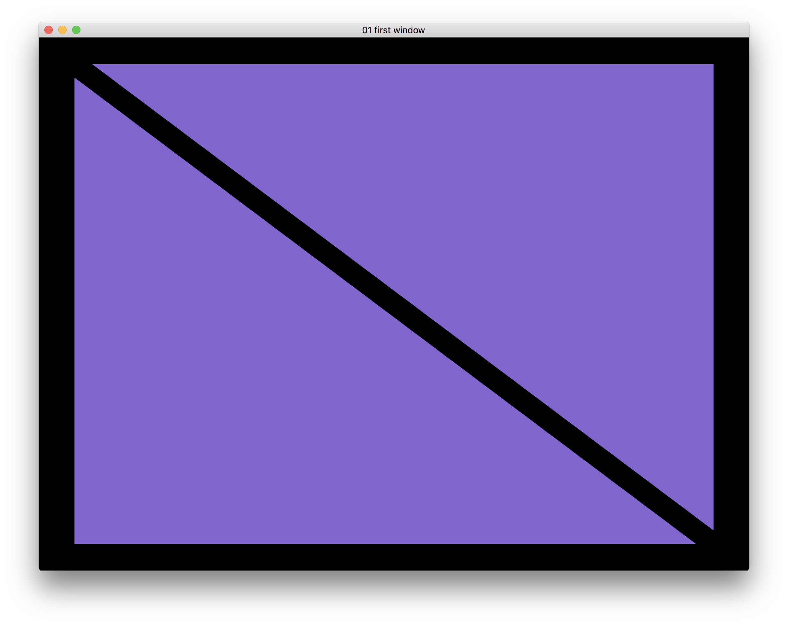
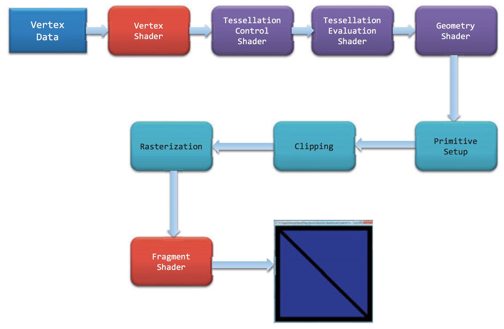
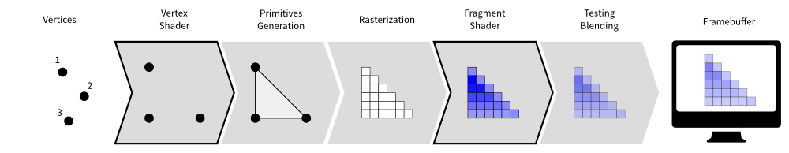

OpenGL Learning 01 Introduction
This is a note for learning OpenGL based on the Red Book ver. 8th. The official book site
What is OpenGL
- OpenGL is a cross-platform API for graphics rendering written in C.
- It applys the client-server system as the application the client, the computer graphics hardware the server. So is could also be used in such like X Window System.
- The detailed implementation of OpenGL API is done by drivers, hardware as well as operating system.
Convension tools for happy coding with OpenGL
API loaders (GLEW and GLAD)
Current most compilers provide OpenGL headers that only support for OpenGL 1.1. One reason is that the OpenGL changes overtime results to the header files changes constantly. Another reason is that the detailed implementation is implemented by various kinds of graphics hardwares and drivers which may results various version of OpenGL head files (a lot of extentions in OpenGL e.g. ARB part).
Thus, the solution to this problem is dynamic loading the function from where they actually implemented (e.g. getProcAddress).
Often used loaders:
OpenGL Extension Wrangler Library (GLEW):
- For using this library, we need first compile this library in the local computer. It will gsther computer information and check the supported OpenGL version to decide what functions should be exposed.
- Glance at src:
1
2
3
4
5
6
7
8
9
10
11
12
13
14
15
16
17
18
19
20
21
22
23
24
25
26
27
28
29
30In glew.h
/* ------------ GL_VERSION_3_0 -------------- */
...
...
...
GLEW_FUN_EXPORT PFNGLUNIFORM1UIPROC __glewUniform1ui;
...
In glew.c
...
// Define glewGetProcAddress.
...
...
...
// Get function address
...
GLboolean r = GL_FALSE;
r = ((glUniform1ui = (PFNGLUNIFORM1UIPROC)glewGetProcAddress((const GLubyte*)"glUniform1ui")) == NULL) || r;
...
GLAD
- GLAD could be look at a generator of glew headers. By giving the settings (GL version, language), it generates loader files for you. The benefit of this method is that GLAD generates loader based on the official specifications from the Khronos SVN thus it could always provide up to date headers. You could try GLAD to generate header on their website
OpenGL Mathematics (GLM)
Although we could do mathematic computation through a lot of shaders written in OpenGL Shading Language (GLSL) on graphics processing unit (GPU), it is alwasys handy to prepare a mathematic computation library out of GPU. GLM is such a library that have classes and functions designed and implemented with the same naming conventions and functionalities than GLSL, as well as useful extentions.
GLFW (fullname: OpenGL FrameWork?)
GLFW is an Open Source, multi-platform library for OpenGL, OpenGL ES and Vulkan development on the desktop. It provides a simple API for creating windows, contexts and surfaces, receiving input and events.
It is written in C and has native support for Windows, macOS and many Unix-like systems using the X Window System, such as Linux and FreeBSD.
Let’s show things using OpenGL!
In this section, I will show how to draw two trangles using OpenGL, GLFW and GLEW. Here is the display result:

Window creation useing GLFW
For focusing OpenGL code in the main file, I wrapped window related variable and functions to a glfwWindow class.
OpenGL part
The process of displaying things you want on the screen is generally going like this: define the data -> transfer to OpenGL server -> go through shader program you defined -> show.
The rendering pipeline of OpenGL is looks like this:

Preparing the data
For rendering objects, OpenGL use Vertex Array Objects (VAOs) to describe how to rendering them. It is an OpenGL Object that stores all of the state needed to supply vertex data. One of the important object it stored is Vertex Buffer Objects (VBOs) which actually store the vertex data.
VAOs and VBOs are both using glGen* and glBind* function to be created and bound to be current context.
Preparing shaders and go through them
OpenGL use OpenGL Shading Language (GLSL) for shader files. We need to provide at least two shaders to OpenGL: vertex shader and fragment shader.
The vertex shader usually compute the vertex position transformation like projection. The fragment shader used for compute color of each pixel.

We usually save shader file to files. When we want to use them, we read files, compile and link them together in our code using glCreateShader(), glCompileShader() and glLinkProgram().
The shader related function are wrapped to shader class.
Rendering in the loop
After preparing the data, we need to render things in a loop function for each frame. First we need to select the render program, this is using glUseProgram(). Then transfer vertex data using glVertexAttribPointer() to shader program.
Code
Here is the code.